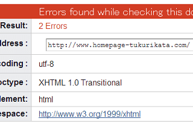
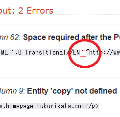
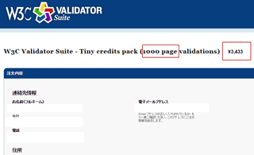

W3C Validでウェブ標準な作り方
HTMLやCSSの書き方には決まりがあり、W3C（World Wide Web Consortium）という国際的な非営利団体がその仕様を決めています。
FirefoxやChrome、サファリ、あるいはIEといった各社のブラウザも、このW3Cの仕様に対応した形で開発されているため、どのブラウザでサイトを閲覧しても基本的にはほぼ同じように表示されます。
ホームページを作成する際にも、このW3Cの規格に準拠した形でHTMLとCSSを作っていけば、サイトが大きく崩れてしまうといったことはありません。また、SEO対策の面でも適切にHTMLやCSSが書かれているサイトの方が有利といわれています。
HTMLやCSS文法のチェック方法
ホームページが正しいHTMLやCSSの文法で書かれているかどうかを検証することを、バリデーション（validation）とか、バリデート（validate）と言われており、以下のようなサイトでチェックすることができます。
HTMLのチェック
Markup Validation Service
http://validator.w3.org/（英語）
HTML文書の文法チェック
Another HTML-lint gateway（停止中が多い）
Another HTML-lint gateway（ミラーサイト）
CSSのチェック
CSS Validation Service
http://jigsaw.w3.org/css-validator/
例えば、当サイトをチェックしてみますと２つのエラーが発生しており、DTDの箇所に空白を入れていなかった点がＮＧとなりました。


このようなエラーを修正していき、できるだけW3Cに準拠した形でウェブ標準なホームページの作り方をするのが望ましいとされています。
■サイト全体を一括でチェックできるvalidator
ページ単位ではなく、サイト単位で一括でチェックするツールの場合は有料のケースが多いです。W3Cの有料版に「W3C Validator Suite」がありますが、こちらは1,000ページあたり27ドル（3,400円程度）で利用することができます。
→ W3C Validator Suite（英語版のみ）
【追記：2015年8月5日、こちらの有料サービスは終了になりました。】

ただ、タグがひとつやふたつ抜けていたとしても、たいていは正しく表示されますし、検索エンジンでのランキングに大きな影響が出てくるわけでもありません。
大手のサイトをチェックしてみてもエラーが連発してますし、それほど細かく気にする必要はありませんが、ウェブ標準でないより、ウェブ標準であった方がよいのは確実ですので、時間のある時にでもチェックされてみることをお勧めします。